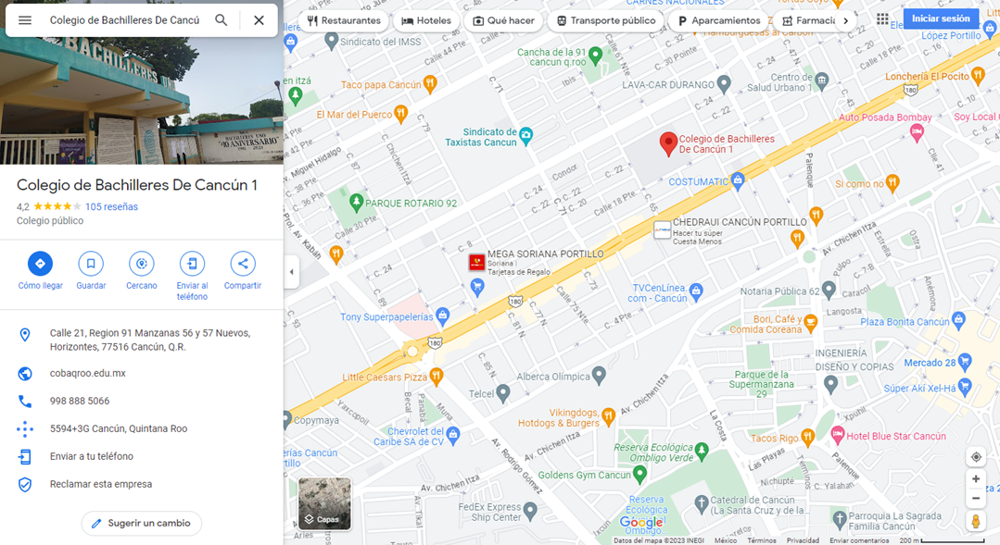

UBICACIÓN DE PLANTELES
El colegio de Bachilleres cuenta con 4 planteles en el Municipio de Benito Juarez
- Plantel Cancún 1:Calle 21, Region 91 Manzanas 56 y 57 Nuevos, Horizontes, 77516 Cancún, Q.R.

- Plantel Cancún 2:Av. Francisco I. Madero 30, 77538 Cancún, Q.R.
- Plantel Cancún 3:Luis Echeverría Álvarez esquina Carlos Salinas de Gortari, Luis Echeverría Álvarez, Alfredo V. Bonfil, 77560 Cancún, Q.R.
- Plantel Cancún 4:Av. Chetumal SM 260, Fraccionamiento Prado Norte, 77519 Cancún, Q.R.